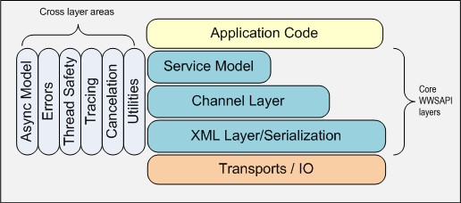

The Windows Web Services API is a layered API and it may be pictured as follows

The WWSAPI is a layered API. We expect most developers to target the Service Model, which is a method-based programming model. In the Service Model, the Service Host provides the server side programming model, while Service Proxy provides the client side programming model.
Every layer exposes a set of APIs and types that can be used with APIs of that layer.
The top level layer called the Service Model provides a method-based programming model and it is the easiest model to use. In the Service Model, the Service Host provides the server side programming model, while the Service Proxy provides the client side programming model. Context is used within the Service Model to pass in a relevant state available to the service operation and/or the callback when it is invoked. And Service Contract is used to specify a service contract on an endpoint exposed on the service. The following components and operations are part of the Service Layer:
The Service Model is built upon a Channel Layer, which provides full flexibility but is more difficult to use. The following components and operations are part of the Channel Layer:
The Channel Layer is in turn built upon a lightweight XML framework, which includes deserialization of C data types. The following components and operations are part of the XML Layer:
The following are topics that apply to any of the three layers:
For more information about API elements, see Windows Web Services Reference. For examples of using the API, see Using Windows Web Services.
Â
Â